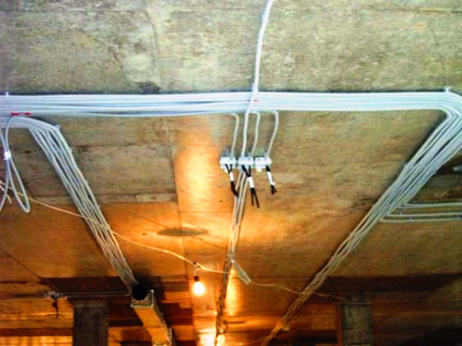

Качественный электромонтаж в Санкт-Петербурге и ленобласти, стаж 12 лет. Частный электрик, недорого и качественно.
Тел. 8 904 642 08 57 Николай.

Монтаж проводки в гофротрубе.
В данной статье описаны основные моменты монтажа электропроводки в гофре, а также приведены полезные советы, которые будут полезны читателям, решившим выполнить данную работу самостоятельно.
Исходя из того, что поливинилхлорид, используемый для производства гофр, относится к не горящим материалам, то производить монтаж электропроводки в гофрированных трубах можно на любых строениях, даже деревянных. Несмотря на то, что монтаж проводки под обшивкой деревянных домов рекомендуется проводить в стальных трубах, очень часто вместо них используют электротехнические гофрированные трубы. В этой статье мы расскажем основные моменты монтажа электропроводки в гофротрубе.
Монтирование электропроводки в гофре.

Прежде, чем приступить к монтированию электропроводки в гофре, следует определиться с необходимой длинной этой самой трубы. После того, как требуемый размер будет определен, нужно отрезать лишнюю часть ножом, а стальную проволоку перекусить бокорезами. При перекусывании проволоки следует учитывать, что в гофре она размещена в натянутом состоянии и может уйти внутрь, откуда ее будет возможно достать, лишь сделав новый надрез на трубе. Это объясняется тем, что проволока при уходе внутрь, несомненно, упрется в одну из складок гофротрубы. Поэтому, во избежание подобной ситуации, удерживайте проволоку пальцами при перекусывании, после чего вытащите ее наружу и загните вдоль внешней стороны гофры. Также до начала монтажа нужно подготовить провода. Для этого достаточно обмотать связку проводов по всей длине изолентой ПВХ, стараясь делать одинаковые промежутки между обмотками.
Теперь, когда все подготовительные работы закончились, можно приступать к затягиванию кабелей в трубу. Сначала необходимо надежно соединить конец связки проводов с проволокой. Это можно выполнить двумя методами: обвить проволокой связку или проколоть пару раз изоляцию кабелей. Вне зависимости от того, какой способ будет выбран, проводить закрепление проволоки с кабелем нужно качественно и надежно. Особое внимание следует обращать и на то, чтобы концы проводов не торчали по сторонам, иначе при протяжке они могут упереться во внутренние изгибы трубы. Если соединение проволоки со связкой выполнено недостаточно надежно, то может произойти обрыв проволоки и ее последующий вылет из трубы. В этом случае трубу придется разрезать, а потом склеивать по частям.
Затяжка кабелей в гофру не самая простая задача.
Эту работу лучше выполнять вдвоем, когда один будет держать проволоку, а другой натягивать трубу на связку. Если помощников нет, то можно провести затяжку и в одиночку. Для этого нужно привязать проволоку к неподвижной строительной конструкции, например, к бетонному столпу от забора, поскольку во дворе больше свободного пространства, чем в доме.
После того, как связка проводов будет введена в гофру, можно приступать к монтажу трубы на стенах и потолке. Крепеж осуществляется с помощью алюминиевых полос или пластиковых клипсов, при покупке которых следует учитывать диаметр трубы. Крепежи располагаются в зависимости от веса кабелей, находящихся в трубе. Их лучше размещать через небольшие и при этом одинаковые расстояния, чтобы избежать возможного провисания трубы.
При вводе проводов в коробки ответвления, розетки и выключатели, неопытные электрики часто оставляют голые участки проводов, поскольку не вносят гофру внутрь. Для этого существуют специальные коробки, розетки и выключатели, которые уже оборудованы резиновыми уплотнителями. В зависимости от диаметра вводимой гофры в них вырезаются необходимые разъемы. Но они в основном применяются в тех случаях, когда в доме выполнена открытая электропроводка.
В жилых помещениях монтаж проводки в гофротрубе применяется не очень часто, поскольку она портит интерьер. Хотя, некоторые умельцы, правильно подобрав цвет трубы и аккуратно выполнив ее монтаж, умудряются еще больше подчеркнуть интерьер квартиры или загородного дома.


Сколько будут стоить материалы.
Замена электропроводки в панельном доме.
Расценки на электропроводку квартир.
Сколько стоит замена электропроводки в двухкомнатной квартире?.
Сколько стоит проложить проводку в 3 ком квартире?
Сколько стоит проложить проводку в четырехкомнатной квартире?
Сколько стоит сделать внутреннюю проводку?.
Установка люстр и светильников.
Замена электропроводки в панельном доме.
Электромонтаж проводов в бане.